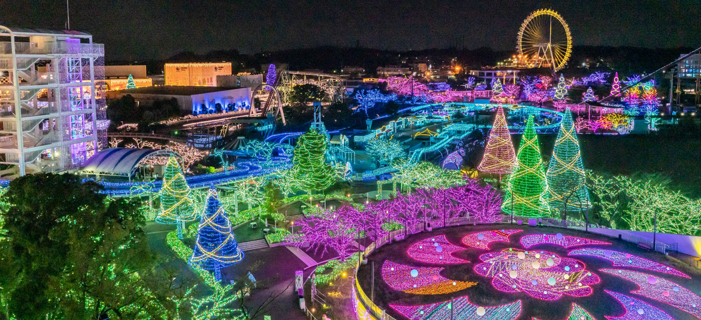

Du lịch mùa Đông
Du lịch mùa đông tại Nhật? Vâng đúng vậy du lịch tại Nhật vào mùa đông là một trong những trải nghiệm dành cho những ai thích cái lạnh dưới ０℃.
Núi Phú Sĩ là địa điểm đầu tiên tôi muốn nói tới. Vào mùa đông với cái lạnh của thời tiết núi Phú Sĩ sẽ toát lên một vẻ đẹp đậm chất riêng của mình, với đỉnh núi phủ đầy tuyết trắng đứ từ xa ngắm nhìn núi Phú Sĩ sẽ đem lại cho bạn một cảm nhận rất riêng tại đây.
Ngoài ra khi du lịch Nhật Bản vào mùa đông các bạn còn có thể trải nghiệm môn thể thao trượt tuyết với những địa hình thử thách người chơi tại những khu công viên trượt tuyết tại Nhật Bản.
Mùa đông tại Nhật không chỉ ngoài vẻ đẹp của thời tiết mà nó còn có nhữn vẻ đẹp được chính con người Nhật Bản tạo nên, đó chính là lễ hội ánh sáng . Với hàng nghìn bóng đèn leb người Nhật đã tạo nên một công viên ánh sáng rực rỡ và chỉ được tổ chức vào mà đông. Khi tới đây các bạn sẽ được chiêm ngưỡng những màn trình diễn nghệ thuật làm từ bóng đèn leb với đủ màu sắc sặc sỡ mà chỉ tại lễ hội ánh sáng tại Nhật Bản mới có.